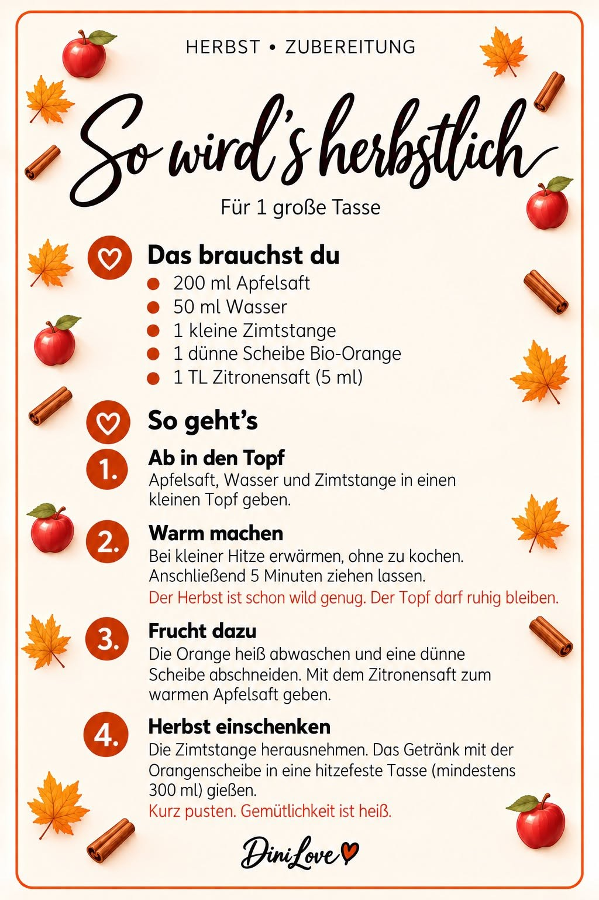
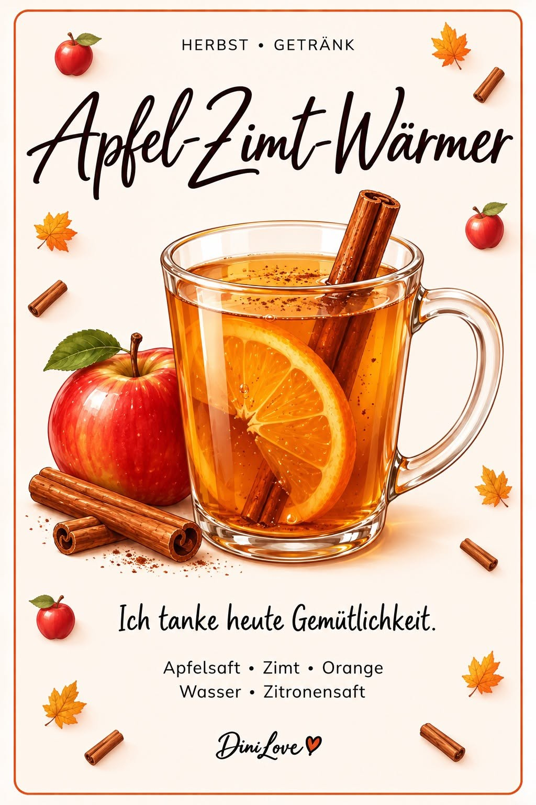
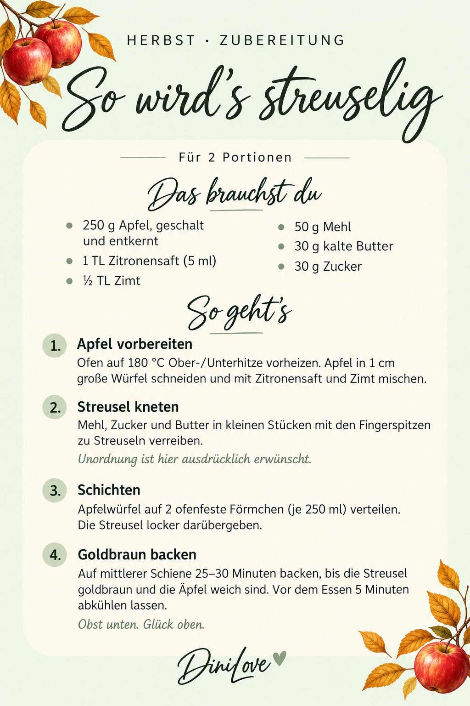
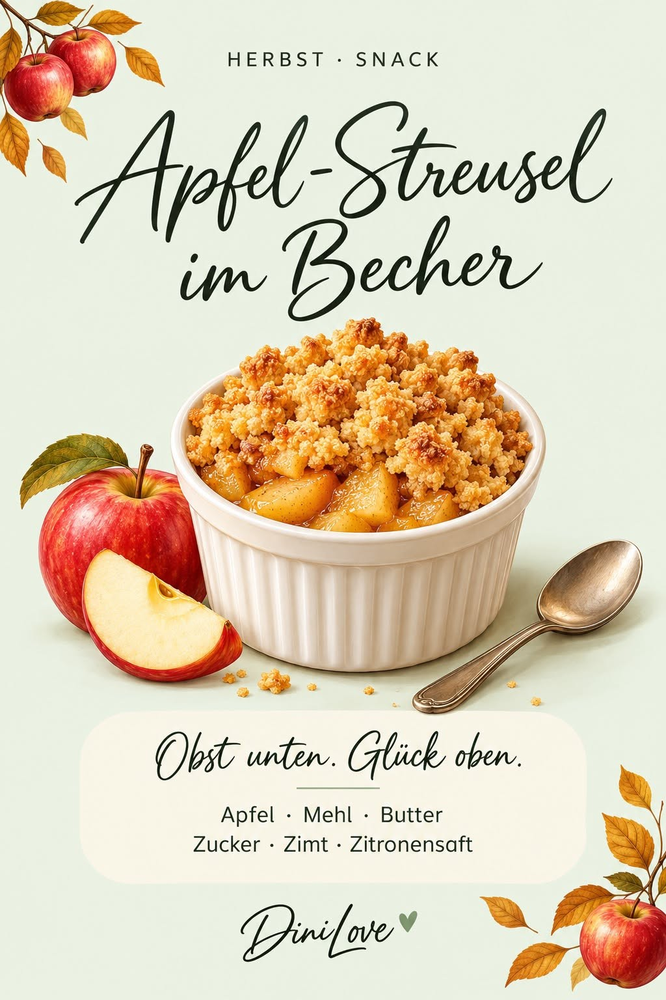
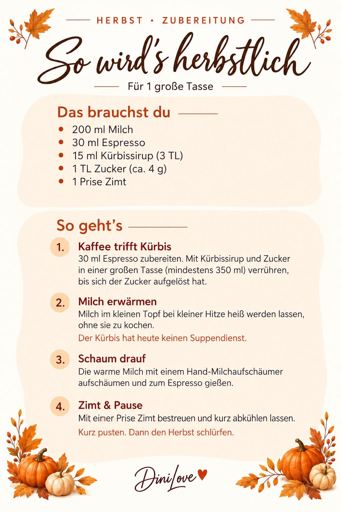
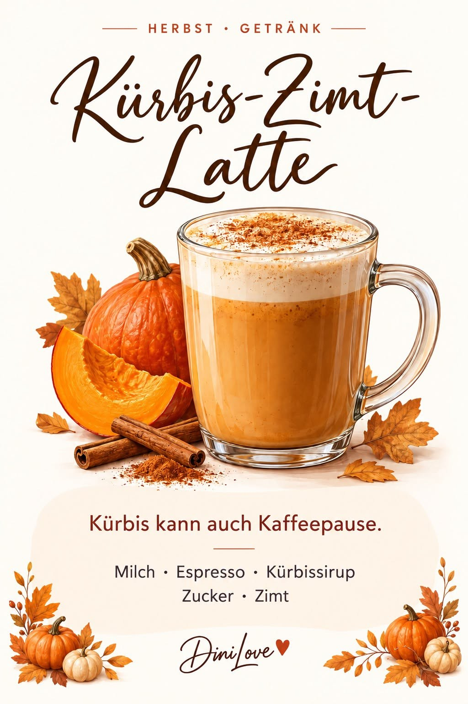

Herbst · Getränk
Apfel-Zimt-Wärmer
Warmer Apfelsaft mit Zimt, Orange und einem kleinen Spritzer Zitrone.
Kreative, saisonale Ideen, die aus einem normalen Bistro-Moment etwas Besonderes machen – von warmen Getränken bis zu kleinen Snacks.
24 Türchen · 24 Rezepte · jeden Tag eine neue Überraschung.


Warmer Apfelsaft mit Zimt, Orange und einem kleinen Spritzer Zitrone.


Warme Apfelwürfel und goldbraune Streusel als unkomplizierter süßer Bistro-Snack.


Espresso, warme Milch, Kürbissirup und Zimt – eine kleine Herbstpause in der Tasse.


Fruchtiger Kirschpunsch mit Orange und Zimt – alkoholfrei und herrlich gruselig.


Herzhafter Toast mit Schinken, Käse und Oliven – schnell gemacht und perfekt für Halloween.


Saftige Muffins mit Orange und Zartbitterschokolade – ideal für die kleine Winterpause.


Warmer Apfelpunsch mit Zimt, Vanille und Zitrone – alkoholfrei und weihnachtlich.


Cremiges Dessert mit Quark, Sahne und Spekulatius – unkompliziert für das Bistro.


Kleine Quarkstollen mit Rosinen, Mandeln und Orangeat – Weihnachten in kleinen Bissen.


Mango, Orange und Zitrone als alkoholfreier Glücksdrink ohne Kohlensäure.


Cremiges Dessert mit Quark, Sahne und Glückskeksen – passend zum Jahreswechsel.